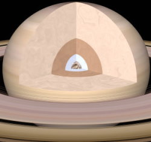

Saturne est la deuxième plus grosse planète du système solaire et la sixième en partant du Soleil. Il s'agit d'une planète géante gazeuse Sa masse vaut 95 fois celle de la Terre, et son volume 900 fois. Elle accomplit une révolution en 29 années et 167 jours. Saturne est la moins dense des planètes; : sa densité (0.7) est plus faible que celle de l'eau.
Comme Jupiter, Saturne est composée approximativement de 75% d'hydrogène et de 25% d'hélium avec des traces d'eau, de méthane et de gaz d'ammoniac, semblable à la composition de la Nébuleuse Solaire primordiale lors de la formation du système solaire.
Les bandes si proéminentes sur Jupiter sont beaucoup plus faibles sur Saturne. Elles sont aussi beaucoup plus larges près l'équateur. Les détails aux sommets des nuages sont invisibles depuis la Terre et ce ne fut qu'après la visite des sondes Voyager que tous les détails de la circulation atmosphérique de Saturne purent être étudiés.
Saturne compte 82 satellites en rotation autour d'elle. Après le passage des sondes Voyager en 1980, les astronomes connaissaient 10 satellites. Le premier fut Titan, découvert par Huygens en 1655. Le passage des sondes Voyager 1 etVoyager 2 permit la découverte de 7 lunes supplémentaires, suivies 10 ans plus tard, par la découverte de Pan. Fin 2000, l'Union Astronomique Internationale a annoncé coup sur coup la découverte de 4 lunes le 26 octobre, 2 autres le 18 novembre et enfin 6 dernières le 7 décembre. Avec l'arrivée de la sonde Cassini dans la banlieue proche de Saturne de nouvelles découvertes ont eu lieu, 3 en 2004, puis 16 autres la même année. Un satellite fut découvert en 2005 puis 8 en 2006, 4 en 2007, un en 2008, un en 2009 et d'autres sont à prévoir. Il existe également 3 satellites non confirmés : S/2004 S3, S/2004 S4 et S/2004 S6. En octobre 2019, une équipe d'astronomes observent 20 nouveaux satellites.
STRUCTURE
Saturne possède un noyau rocheux de silicates et de fer. Il a une température très élevée, atteignant probablement 12 000 K.
Ce noyau est entouré d'une couche d'hydrogène métallique, puis d'hydrogène liquide, puis enfin d'hydrogène gazeux.